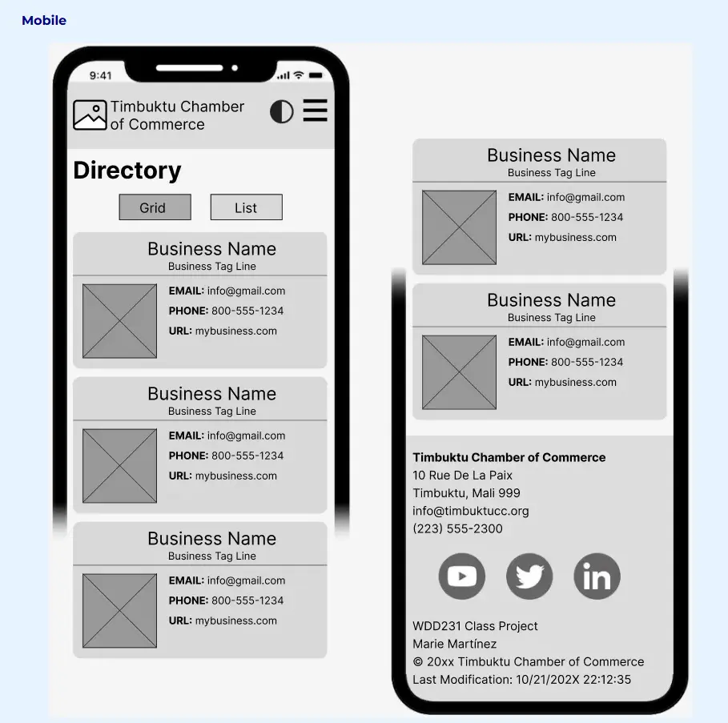
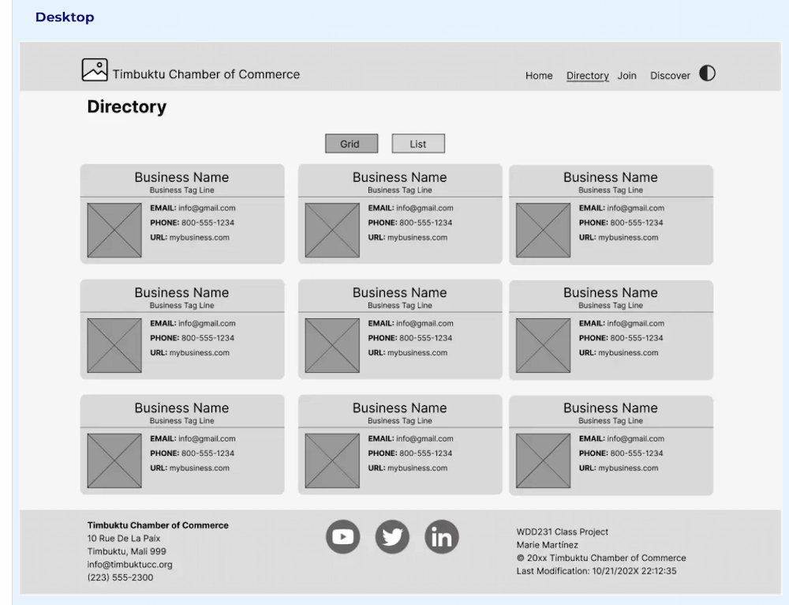

Site Name
Pretoria East Chamber of Commerce
Site Purpose
The Pretoria East Chamber of Commerce website serves as a resource hub for local businesses, entrepreneurs, and community members. The site promotes networking opportunities, local events, business resources, and economic growth within Pretoria.
Target Market
Business owners, entrepreneurs, investors, residents, and visitors interested in Pretoria's business community.
Site Goals
- Promote local businesses.
- Increase chamber membership.
- Provide networking opportunities.
- Support economic growth in Pretoria.
User Personas
Small Business Owner
Looking for networking opportunities and marketing support.
Corporate Executive
Interested in partnerships and investment opportunities.
New Resident
Wants information about local businesses and events.
Scenarios
- How do I join the Chamber?
- What networking events are scheduled this month?
- Which local businesses provide IT services?
SEO Plan
- Pretoria East business directory
- Pretoria East Chamber of Commerce
- Business networking Pretoria East
- Local businesses Pretoria East
Design Brief
Primary Color: #003366
Secondary Color: #0066cc
Background Color: #f5f5f5
Text Color: #222222
Font: Roboto, sans-serif
Site Map
- Home
- Discover
- Directory
- Join
Wireframes
Mobile Wireframe

Desktop Wireframe
